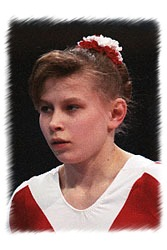

Elena Dolgopolova (RUS)
1996 Olympic Team Silver Medalist
1998 Goodwill Games V Silver Medalist

Medal Total
Olympic Games: 1
Silver
World Championships: 1 Silver
Elena was born on January 23, 1980 and trained at the Army Club in Volzhsky.
Competition Results
1993
Jr. European Championships: 13th AA, 5th B
1995
American Cup: 6th AA
Golden Sands International: 5th AA
Intl. Mixed Pairs: 11th Team
Jr. CIS Championships: 1st AA, 1st FX, 2nd V, 2nd UB, 2nd B
Ljubljana International: 1st AA, 1st UB, 1st FX, 2nd V, 6th B
RUS Cup: 6th AA
1996
Catania Cup: 10th AA
Cup of Buratino: 1st AA
ITA-BLR-ROM-RUS: 11th AA
International Championships of Romania: 4th AA, 1st UB
Intl. Gymnastics Days: 1st AA
Kiev International: 8th AA
Olympic Games: 2nd Team
RUS Championships: 6th AA
1997
3-on-3 International: 6th Team
American Cup: 9th AA (prelims)
GBR-RUS Dual Meet: 1st Team, 5th AA
Intl. Gymnastics Days: 2nd AA
Intl. Hippolyth Trophy: 1st AA
Massilia Cup: 2nd FX, 3rd V
RUS Championships: 6th AA, 1st V
RUS Cup: 4th AA
World Championships: 2nd Team, 7th V
World Stars: 5th V
1998
DTB Cup: 2nd V, 4th UB
GBR-RUS Dual Meet: 1st Team, 5th AA
Goodwill Games: 2nd V
RUS Championships: 3rd AA
1999
RUS Championships: 10th AA
RUS Cup: 3rd B, 3rd FX, 5th V, 7th UB
University Games: 10th AA, 3rd V
2000
RUS Cup: 4th AA
This page was created on June 25,
2005.
© Gymn Forum